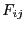
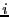
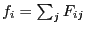
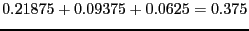
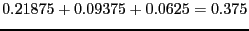

|
 |
 |
A Manual for use of PyPedal
A software package for pedigree analysis |
 |
 |
 |
7.4.3 Partial Inbreeding
Partial inbreeding coefficients, 
, measure the probability that the alleles at an arbitrary locus in individual 
are identitical-by-descent and that the alleles were derived from an allele in founder
[Lacy, Alaks, and WalshLacy
et al.1996]; Gulisija et al. GulisijaGWT2006 provide an excellent description of the tabular method for calculating
. Computational requirements may be high for large pedigrees with a large number of founders because partial kinship matrices are calculated for each founder in the pedigree. The usual coefficients of inbreeding may be obtained by summing the coefficients of partial inbreeding over all founders common to the parents of animal
, that is,

.
For example, consider the pedigree presented in Figure 2 of Gulisija and Crow GulisijaC2007. The individual of interest,  , has an inbreeding coefficient of 0.375 and coefficients of partial inbreeding to founders J, K, and M of 0.21875,0.09375, and 0.0625, respectively. As asserted,

.
, has an inbreeding coefficient of 0.375 and coefficients of partial inbreeding to founders J, K, and M of 0.21875,0.09375, and 0.0625, respectively. As asserted,

.
Release 2.0.3, documentation updated on November 29, 2005
Revised May 15, 2012.
See About this document... for information on suggesting changes.